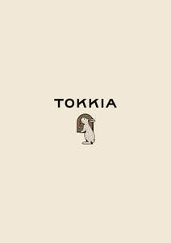

Trade Mark Journal No.2025/040 3 October 2025
UK00004237369 22 July 2025 (21,30,32,35,43)

- Class 21
- Tea infusers; Tea cups; Tea pots; Tea caddies; Tea strainers; Tea canisters; Tea filters; Tea sets; Drip mats for tea; Tea infusers of precious metal; Tea kettles [non-electric]; Tea kettles, non-electric; Tea makers [non-electric]; Tea services [tableware]; Portable tea caddies; Coffee cups; Coffee mugs; Coffee pots.
- Class 30
- Tea; Oolong tea [Chinese tea]; Oolong tea; Rooibos tea; Chai tea; Chamomile tea; Iced tea; Tea (Iced -); Tieguanyin tea; Darjeeling tea; Herbal tea; Peppermint tea; Black tea [English tea]; Ginseng tea; Ginger tea; Jasmine tea; Tea cakes; Tea beverages; Green tea; Tea bags for making non-medicated tea; Tea for infusions; Instant Oolong tea; Tea bags; Rosemary tea; Barley tea; Buckwheat tea; Fermented tea; Tea leaves; Tea extracts; Citron tea; Flavourings of tea; Kelp tea; Tea beverages with milk; Sage tea; Lapsang souchong tea; Tea pods; Lime tea; Black tea; White tea; Teas; Iced tea (Non-medicated -); Tea essences; Linden tea; Iced teas; Yellow tea; Herb tea [infusions]; Beverages with tea base; Beverages with a tea base; Red ginseng tea; Instant tea; Barley-leaf tea; Ginseng tea [insamcha]; Tea mixtures; Tea substitutes; Tea (Non-medicated -); Artificial tea; Herbal tea [other than for medicinal use]; Beverages made of tea; Instant green tea; Japanese green tea; Non-medicinal herbal tea; Theine-free tea; Herbal teas; Tisanes made of tea (Non-medicated -); Iced tea mix powders; Tea beverages (Non-medicated -); Packaged tea [other than for medicinal use]; Roasted barley tea [mugicha]; Chrysanthemum tea (Gukhwacha); Apple flavoured tea [other than for medicinal use]; Iced coffee; Fruit flavoured tea [other than medicinal]; Jasmine tea bags, other than for medicinal purposes; Tea bags (Non-medicated -); Roasted barley tea; Lime blossom tea; Instant white tea; Orange flavoured tea [other than for medicinal use]; Instant black tea; Fruit teas; Coffee; Artificial tea [other than for medicinal use]; Jasmine tea, other than for medicinal purposes; Tea extracts (Non-medicated -); Rose hip tea; Decaffeinated coffee; Mugi-cha [roasted barley tea]; Yuja-cha (Korean honey citron tea); Flavourings of tea for food or beverages; Coffee, teas and cocoa and substitutes therefor; Herbal teas [infusions]; Caffeine-free coffee; Earl grey tea; Earl Grey tea; Tea essences (Non-medicated -); Roasted brown rice tea; Theine-free tea sweetened with sweeteners; Coffee drinks; Coffee based drinks; Coffee beverages; Beverages with coffee base; Beverages with a coffee base; Instant coffee; Coffee substitutes [artificial coffee or vegetable preparations for use as coffee]; Coffee beans; Coffee capsules; Coffee extracts for use as substitutes for coffee; Danish pastries; Bakery goods; Ground coffee; Coffee based beverages; Malt coffee; Coffee flavourings; Gluten-free bakery products; Chocolate fillings for bakery products; Pastries; Pastry; Viennese pastries; Chocolate pastries; Dairy confectionery; Ice-cream cakes; Flour confectionery; Frozen pastries; Confectionery; Pastries, cakes, tarts and biscuits (cookies); Almond pastries; Savory pastries; Frozen pastry; Confectionery chips for baking; Breads; Vegan cakes; Prepared desserts [pastries]; Croissants; Chocolate confectionary; Pâté [pastries]; Pastries with fruit; Fruit pastries; Prepared desserts [confectionery]; Gluten-free bread; Danish bread; Cakes; Danish bread rolls; Bread and buns; Pre-baked bread; Baguettes; Brioches; Fruit breads; Cupcakes; Flour for baking; Bread.
- Class 32
- Soft drinks flavored with tea; Non-alcoholic beverages flavoured with tea; Non-alcoholic beverages with tea flavor; Non-alcoholic beverages flavored with tea; Non-alcoholic soda beverages flavoured with tea.
- Class 35
- Wholesale services in relation to teas; Retail services in relation to coffee.
- Class 43
- Tea rooms; Cafe services; Café services; Cafés; Coffee shops; Coffee shop services; Bar and restaurant services; Restaurant and bar services; Take-away restaurant services; Take-out restaurant services; Restaurant services; Restaurants (Self-service -); Serving food and drink in restaurants and bars; Providing food and drink in bistros; Restaurants; Provision of food and drink in restaurants; Serving food and drink for guests in restaurants; Restaurant services for the provision of fast food; Self-service cafeteria services; Booking of restaurant seats; Take-away food and drink services; Food and drink catering; Catering of food and drink; Catering (Food and drink -); Teahouse services.
TOKKIA LTD